픽셀 형식 선택
저장 형식과 연산의 허용 형식을 분리해 읽습니다.


그림을 읽는 순서
- 임계값 입력은 지원되는 7종 Gray 형식입니다.
- 컬러 순서와 부동소수 범위는 연산별로 확인합니다.
동작의 원리
영상에서 표현할 수 있는 형식 전체가 각 연산의 입력 집합은 아닙니다.
입력과 결과의 의미
함수별 지원 범위를 살피는 이유는 같은 회색 영상이라도 연산에 필요한 수치 조건이 다르기 때문입니다. 임계값 예제에서는 Gray8과 GrayF32 입력을 기준값 7과 비교해 Gray8 마스크를 얻습니다. 선택된 픽셀이 255로 표현된다고 해서 원본 영상도 Gray8로 변환되었다는 뜻은 아닙니다. 반환 형식까지 확인해야 다음 단계의 입력 조건을 판단할 수 있습니다.
대표 알고리즘의 실제 지원 범위 · 픽셀 형식과 알고리즘 지원 범위에서 설정과 실제 API를 이어서 확인할 수 있습니다.
적용할 때 확인할 점
저장 형식과 연산의 허용 형식을 분리해 읽습니다. 그림의 화살표는 여기에서 설명하는 데이터 또는 제어 관계를 나타냅니다. 실제 호출에서 사용할 수 있는 입력 형식과 반환 객체는 연결된 API 문서의 선언과 파라미터 표를 확인하세요.